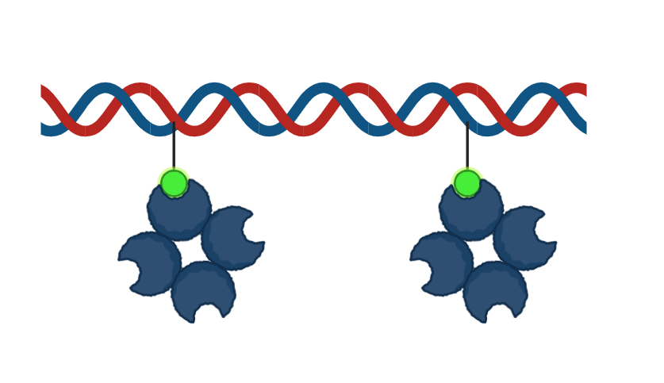
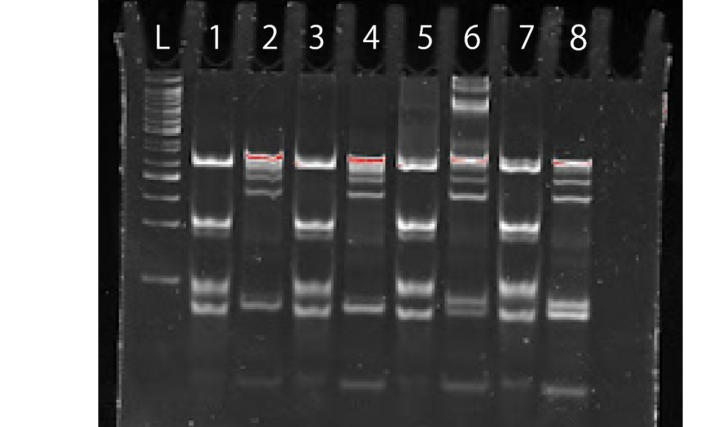

Material
We used DNA and biotin with the following structure in our experiments.
Table 1:DNA seaquence
Figure 1:The structure of Biotin dT from IDT

Figure 2:NUPACK simulation that shows the hybridization of DNA-Long-Control and DNA-Short
Figure 3:NUPACK simulation(circularized DNA for Experiment 3)

Figure 4:The structure of DNA in Figure3
Experiment-1: Mixing dsDNA and avidin at different ratios
In order to Determine the Optimal Avidin Concentration for the Formation of the Curved dsDNA-Avidin Complex,Electrophoresis was performed using a mixture of solutions with varying ratios of avidin- and biotin-modified dsDNA, and the distribution of bands was compared. Detailed experimental methods can be found in the appendix.
Experiment-2: Change the distance between biotin
In order to confirm whether changes in the biotin-to-biotin distance affect the curvature of dsDNA, dsDNA with biotin-to-biotin distances of 1turn, 2turns, and 3turns was reacted with avidin, and electrophoresis was performed.
Detailed experimental methods can be found in the appendix.
Results and Discussion(Experiment₋1,2)
In Figures 5 to 8, we used a 10-bp DNA step ladder. In Figure 9, we used a 50-bp DNA ladder.

|
Figure 5.PAGE analysis of no biotin, 1turn dsDNA with a little avidin
Lane1:no biotin/no avidin
|
Figure 6.PAGE analysis of 2turn, 3turn dsDNA with a little avidinLane1:2turn/no avidin |

|
Figure 7.PAGE analysis of 1turn dsDNA with execess avidinLane1: 1turn/no avidin |
Figure 8.PAGE analysis of 2turn, 3turn dsDNA with execess avidinLane1:2turn/no avidin |
Figure 9.PAGE analysis of 1turn,2turn, 3turn dsDNA with various concentrations of avidinLane1:1turn/avidin:dsDNA=0.5:1
|
〈Discussion〉
Comparing the lanes without and with avidin in Figures 5 and 6, the 20–40 bp bands are likely dsDNA, ssDNA, or short DNA fragments that do not have avidin attached. For figure 9, there are two hypotheses regarding the bands appearing near the top. One hypothesis is that the band indicated by the arrow indicates figure11 structure. Although avidin is in excess, after 1 turn steric hindrance between avidin molecules prevents the formation of the structure shown in the figure12, resulting instead in the structure. Therefore, in the two-turn and three-turn samples, where the distances between biotins are greater, the structure shown in the figure12 forms, and the corresponding bands disappear. The other hypothesis is that the band indicated by the arrow indicates figure10 structure. In the figure10, there are no biotins that are unbound to avidin, so even with excess avidin, the bands remain in 1 turn. In 2 turn and 3turn, because the bending angle is steep, the structure in figure 10 is difficult to form. It is possible that avidin bound during the transition from the structure in figure 11 to that in figure 10, resulting in the structure shown in figure 12. Therefore, in 2 turn and 3turn, the corresponding bands disappear. We plan to mix DNA with a single biotin modification and avidin to form the structure shown in figure 11, and then compare the resulting band positions.
|  | ||
|
Figure 10 |
Figure 11 |
Figure 12 |
Experiment-3: Use the circularized DNA
In order to confirm whether avidin-biotin binding can maintain the bent structure, cut the circular DNA bound to avidin with a restriction enzyme, and perform electrophoresis.
〈Methods〉
1, Circularize DNA-L-circle with circligase.
2, Remove non-circularized DNA with Exonuclease Ⅰ and Exonuclease Ⅲ.
3, Perform annealing with circularized DNA, DNA with biotins, and DNA-L-balance
4, Mix the circular dsDNA with avidin
5, Cut the circular dsDNA with EcoR1 at 37℃ for 60 minutes, then at 65℃ for 20minutes
6, Perform electrophoresis at 100V for 90 minutes at 4℃
Experiment-3-1
〈Purpose〉
Circularize DNA-L-circle with CircLigase
〈Methods〉
Added CircLigase to DNA-L-circle and incubated at 37 °C for 17 hours. Heated at 80 °C for 10 minutes to inactivate the enzyme. Heated the samples at 90 °C for 3 minutes to denature them, then performed electrophoresis at 100V for 70 minutes at room temperature.
〈Result〉
Figure 13.PAGE analysis of circularized DNALadder:10bp DNA step ladder
|
〈Discussion〉
Two bands were observed, one was circularized DNA and the other was non-circularized DNA. It indicates successful circularization.
Experiment-3-2
〈Purpose〉
Remove non-circularized DNA with Exonuclease Ⅰ and Exonuclease Ⅲ.
〈Methods〉
Added Exonuclease Ⅰ and Exonuclease Ⅲ to circularized DNA and incubated at 37 °C for 5 hours. Heated at 85 °C for 40 minutes to inactivate the enzyme. Used an Amicon 10K filter to isolate the circularized DNA. Heated the samples at 90 °C for 3 minutes to denature them, then performed electrophoresis at 100V for 70 minutes at room temperature.
〈Result〉
Figure 14.PAGE analysis of circular DNA after ExoⅠand ExoⅢ treatmentLadder:10bp DNA step ladder
|
〈Discussion〉
The band corresponding to the linear (non-circularized) DNA disappeared, leaving only the band of the circularized DNA. This indicates that the removal of linear DNA was successful.
Experiment-3-3
〈Purpose〉
The bands appearing in the circularized dsDNA after annealing are compared with the bands appearing in the circularized ssDNA and linear ssDNA before annealing.
〈Methods〉
Perform electrophoresis at 100V for 90 minutes at 4℃
Figure 15.PAGE analysis of circularized dsDNA, circularized ssDNA and linear ssDNA before annealing.Ladder(left):a 10-bp DNA step ladder
|
〈Discussion〉
It was confirmed that some ssDNA remained after annealing, and the position of its band was identified.
Experiment-3-4
〈Purpose〉
Cut the circular DNA bound to avidin with a restriction enzyme, and perform electrophoresis.
〈Methods〉
Perform annealing with circularized DNA, DNA with biotins, and DNA-L-balance Mix the circular dsDNA with avidin Incubate the circular dsDNA with EcoR1 at 37℃ for 60 minutes. Heated at 65°C for 20 minutes to inactivate EcoR1. Perform electrophoresis at 100V for 90 minutes at 4℃
〈Result〉
|  | |
|
Figure 16.PAGE analysis of no biotin, 1turn circular DNA cut by EcoR1
|
Figure 17.PAGE analysis of 2turn, 3turn circular DNA cut by EcoR1
|